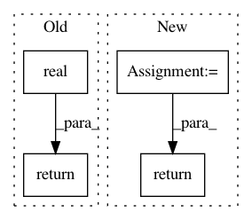

0ab6621dcd3e9cd97a257ea2d8d05b23bfba8609,openke/module/model/HolE.py,HolE,_ccorr,#HolE#Any#Any#,21
Before Change
def _ccorr(self, a, b):
a = tf.cast(a, tf.complex64)
b = tf.cast(b, tf.complex64)
return tf.real(tf.ifft(tf.conj(tf.fft(a)) * tf.fft(b)))
def _calc(self, h, t, r):
return torch.sum(h * t * r, -1)
After Change
b = torch.rfft(b, signal_ndim = 1, onesided = False)
res = self._mul(self._real(a), self._imag(a), self._real(b), self._imag(b))
res = torch.ifft(res, signal_ndim = 1)
return self._real(res).flatten(start_dim = -2)
def _calc(self, h, t, r, mode):
if mode != "normal":
h = h.view(-1, r.shape[0], h.shape[-1])
In pattern: SUPERPATTERN
Frequency: 3
Non-data size: 4
Instances
Project Name: thunlp/OpenKE
Commit Name: 0ab6621dcd3e9cd97a257ea2d8d05b23bfba8609
Time: 2020-04-08
Author: thu.hanxu13@gmail.com
File Name: openke/module/model/HolE.py
Class Name: HolE
Method Name: _ccorr
Project Name: PIQuIL/QuCumber
Commit Name: 52cdf4bec8d2c8c14e6e9ce51799f587086bfd37
Time: 2019-12-28
Author: emerali@users.noreply.github.com
File Name: qucumber/utils/cplx.py
Class Name:
Method Name: scalar_divide
Project Name: PIQuIL/QuCumber
Commit Name: 2ba68b4be3249b7297ea26b1ff5c790bd0d4794f
Time: 2019-12-22
Author: emerali@users.noreply.github.com
File Name: qucumber/utils/unitaries.py
Class Name:
Method Name: rotate_rho_prob